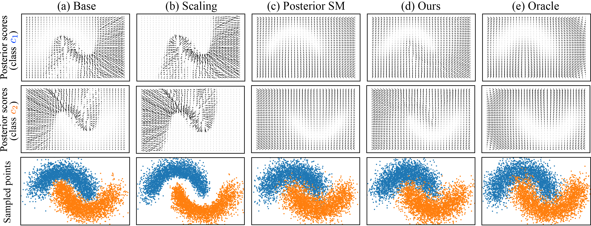
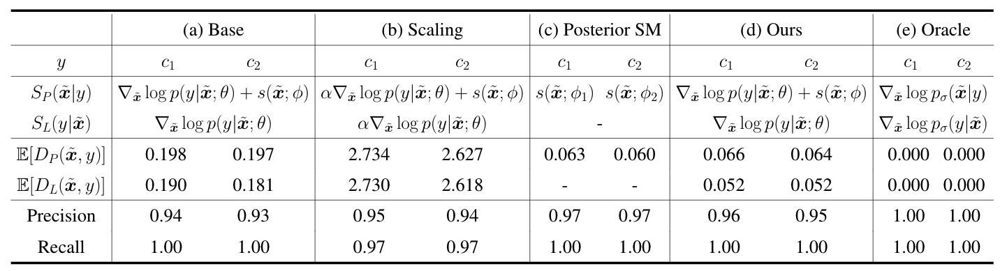
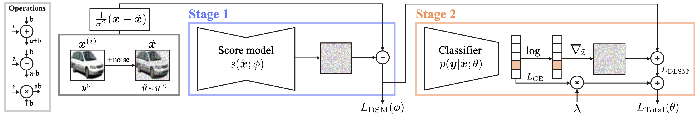
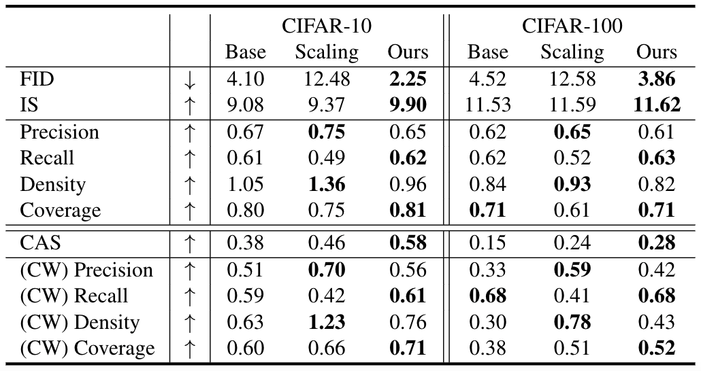
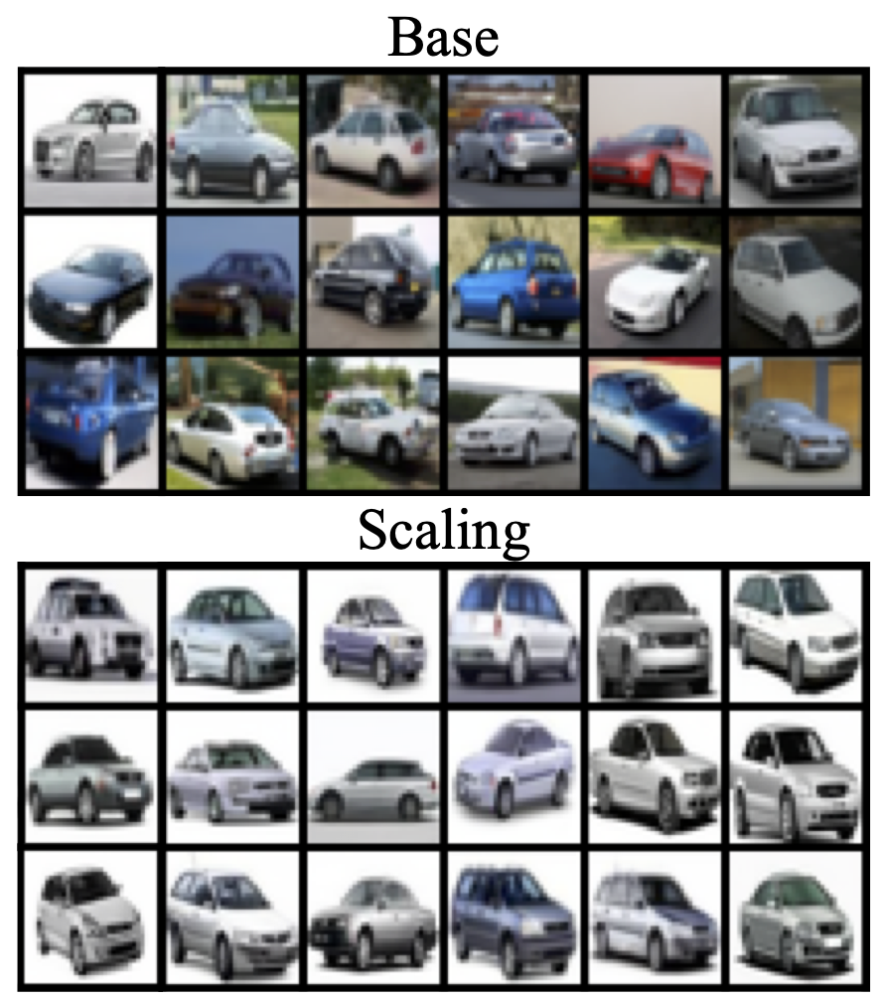
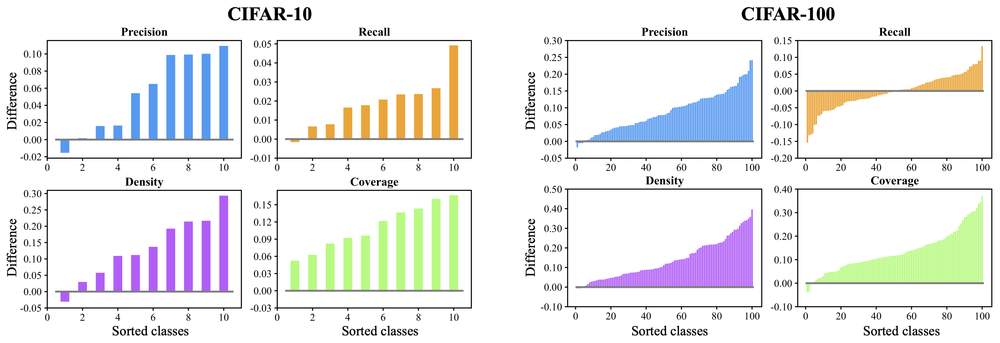
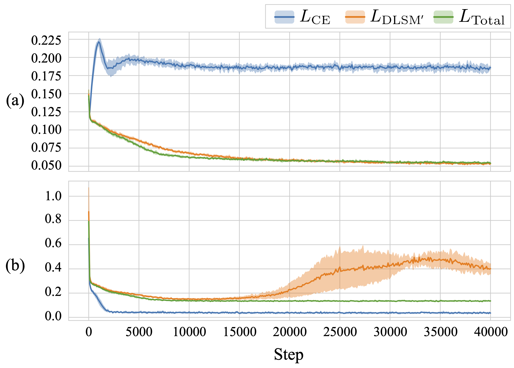

This blog post provides an introduction to our proposed DLSM training method. The contents are essentially the same as our paper, but some redundant sections have been removed and some errors have been corrected. We start with an introduction of the denoising score-matching (DSM) method. Then, we discuss the limitations of the current conditional score-based generation methods. Next, we formulate the proposed DLSM loss. Finally, we present experimental results to demonstrate the effectiveness of DLSM. If you have any questions, please feel free to email Chen-Hao Chao. If you find this information useful, please consider sharing it with your friends.
The following paragraphs provide a review and background information on conditional score-based generation methods.
▶Parzen Density Estimator: Given a true data distribution $p_d(\mathbf{x})$, the empirical data distribution $p(\mathbf{x})$ is constructed by sampling $M$ independent and identically distributed (i.i.d.) data points $\{\mathbf{x}^{(i)}\}_{i=1}^M$, and can be represented as a sum of Dirac functions $\frac{1}{M}\sum_{i=1}^M \delta(\|\mathbf{x}-\mathbf{x}^{(i)}\|)$. Such a non-continuous data distribution $p(\mathbf{x})$ constructed from the dataset often violates the assumptions of score-based models that everywhere is non-zero and is differentiable. To deal with this issue, a previous literature [1] utilized Parzen density estimation to replace the Dirac functions with isotropic Gaussian smoothing kernels $p_{\sigma}(\mathbf{\tilde{x}}|\mathbf{x}) = \frac{1}{(2\pi)^{d/2}\sigma^d} \exp \left( \frac{-1}{2\sigma^2} \|\mathbf{\tilde{x}} - \mathbf{x} \|^2 \right)$ with variance $\sigma^2$. Specifically, Parzen density estimation enables the calculation of $p_{\sigma}(\mathbf{\tilde{x}})=\frac{1}{M}\sum_{i=1}^M p_{\sigma}(\mathbf{\tilde{x}}|\mathbf{x})$. When $\sigma> 0$, the score function becomes well-defined and can thus be represented as the following:
$$\nabla_{\mathbf{\tilde{x}}} \log p_{\sigma}(\mathbf{\tilde{x}})=\frac{\frac{1}{M}\sum_{i=1}^M \frac{1}{\sigma^2} (\mathbf{x}^{(i)}-\mathbf{\tilde{x}}) p_{\sigma}(\mathbf{\tilde{x}}|\mathbf{x}^{(i)}) }{\frac{1}{M}\sum_{i=1}^M p_{\sigma}(\mathbf{\tilde{x}}|\mathbf{x}^{(i)})}.$$
This equation can be directly applied to generate samples with Langevin diffusion. Unfortunately, this requires summation over all $M$ data points during every iteration, preventing it from scaling to large datasets due to the rapid growth in computational complexity.
▶Denoising Score Matching (DSM): Score matching (SM) [2] was proposed to estimate the score function with a model $s(\mathbf{\tilde{x}};\phi)$, parameterized by $\phi$. Given a trained score model $s(\mathbf{\tilde{x}};\phi)$, the scores can be generated by a single forward pass, which reduces the computational complexity by a factor of $M$ in comparison to the brute force method. To train such a score model, a straightforward approach is to use the Explicit Score-Matching (ESM) loss $L_{ESM}$, represented as:
$$L_{ESM}(\phi) = \mathbb{E}_{p_{\sigma}(\mathbf{\tilde{x}})}\left[\|s(\mathbf{\tilde{x}};\phi) - \nabla_{\mathbf{\tilde{x}}} \log p_{\sigma}(\mathbf{\tilde{x}}) \|^2 \right].$$
This objective requires evaluating $\nabla_{\mathbf{\tilde{x}}} \log p_{\sigma}(\mathbf{\tilde{x}})$ for each training step, which also fails to scale well to large datasets. Based on Parzen density estimation, an efficient alternative, called Denoising Score-Matching (DSM) loss [1], is proposed to efficiently calculate the equivalent loss $L_{DSM}$, which is expressed as follows:
$$L_{DSM}(\phi) = \mathbb{E}_{p_{\sigma}(\mathbf{\tilde{x}}|\mathbf{x})p(\mathbf{x})}\left[\|s(\mathbf{\tilde{x}};\phi) - \nabla_{\mathbf{\tilde{x}}} \log p_{\sigma}(\mathbf{\tilde{x}}|\mathbf{x}) \|^2 \right],$$
where $\nabla_{\mathbf{\tilde{x}}} \log p_{\sigma}(\mathbf{\tilde{x}}|\mathbf{x})$ is simply $\frac{1}{\sigma^2}(\mathbf{x}-\mathbf{\tilde{x}})$. Since the computational cost of denoising score matching is relatively lower in comparison to other reformulation techniques, it is extensively adopted in recent score-based generative models.
▶Score Decomposition via Bayes' Theorem: Score models can be extended to conditional models when conditioned on a certain label $y$, which is assumed to be a discrete random variable. A popular approach adopted by researchers utilizes Bayes' theorem $p_{\sigma}(\mathbf{\tilde{x}}|y)=p(y|\mathbf{\tilde{x}})p_{\sigma}(\mathbf{\tilde{x}})/p(y)$ to decompose the conditional score $\nabla_{\mathbf{\tilde{x}}} \log p_{\sigma}(\mathbf{\tilde{x}}|\mathbf{x})$ into a mixture of scores [3], which enables conditional data generation. The score decomposition can be achieved by taking the log-gradient on both sides of the equation, expressed as follows:
$$\nabla_{\mathbf{\tilde{x}}} \log p_{\sigma}(\mathbf{\tilde{x}}|y) = \nabla_{\mathbf{\tilde{x}}} \log p_{\sigma}(y|\mathbf{\tilde{x}}) + \nabla_{\mathbf{\tilde{x}}} \log p_{\sigma}(\mathbf{\tilde{x}}) - \nabla_{\mathbf{\tilde{x}}} \log p(y)=\nabla_{\mathbf{\tilde{x}}} \log p_{\sigma}(y|\mathbf{\tilde{x}}) + \nabla_{\mathbf{\tilde{x}}} \log p_{\sigma}(\mathbf{\tilde{x}}).$$
The equalities hold since $\nabla_{\mathbf{\tilde{x}}} \log p(y)$ equals to zero. We denote $\nabla_{\mathbf{\tilde{x}}} \log p_{\sigma}(\mathbf{\tilde{x}}|y)$ as the posterior score, $\nabla_{\mathbf{\tilde{x}}} \log p_{\sigma}(y|\mathbf{\tilde{x}})$ as the likelihood score, and $\nabla_{\mathbf{\tilde{x}}} \log p_{\sigma}(\mathbf{\tilde{x}})$ as the prior score. Base on this equation, a conditional score model $s(\mathbf{\tilde{x}}|y;\theta,\phi)$ can be represented as the combination of the log-gradient of a classifier $p(y|\mathbf{\tilde{x}};\theta)$ and a prior score model $s(\mathbf{\tilde{x}};\phi)$:
$$s(\mathbf{\tilde{x}}|y;\theta,\phi) = \nabla_{\mathbf{\tilde{x}}} \log p(y|\mathbf{\tilde{x}};\theta) + s(\mathbf{\tilde{x}};\phi).$$
The classifier can be trained with cross-entropy (CE) loss $L_{CE}(\theta)=\mathbb{E}_{p_{\sigma}(\mathbf{\tilde{x}}|\mathbf{x}) p(\mathbf{x},y)}[-\log p(y|\mathbf{\tilde{x}};\theta)]$, and the score model trained with denoising score-matching (DSM) loss $L_{DSM}(\phi)$. Unfortunately, a few previous studies [3,4] have noticed that the approximation of $\nabla_{\mathbf{\tilde{x}}} \log p(y|\mathbf{\tilde{x}};\theta)$ is empirically inaccurate (referred to as the score mismatch issue in this work), and leveraged a scaling factor $\alpha>0$ to adjust the likelihood score $\nabla_{\mathbf{\tilde{x}}} \log p(y|\mathbf{\tilde{x}};\theta)$. Such a scaling factor is a hyperparameter that controls the amount of conditional information incorporated during the sampling process. However, this technique usually causes the diversity of generated data samples to degrade noticeably.
To further investigate the score mismatch issue, we first leverage a motivational experiment on the inter-twining moon dataset to examine the extent of the discrepancy between the estimated and true posterior scores. In this experiment, we consider five different methods (denoted as (a)~(e)) to calculate the posterior scores:
 Figure 1. The visualized results on the inter-twining moon dataset. The plots presented in the first two rows correspond to the visualized vector fields for the posterior scores of the class $c_1$ (upper crescent) and $c_2$ (lower crescent), respectively. The plots in the third row are the sampled points. Different columns correspond to different experimental settings (i.e., (a)~(e)).
Fig. 1 visualizes the posterior scores and the sampled points based on the five methods. It is observed that the posterior scores estimated using methods (a) and (b) are significantly different from the true posterior scores measured by method (e). This causes the sampled points in methods (a) and (b) to deviate from those sampled based on method (e). On the other hand, the estimated posterior scores and the sampled points in method (c) are relatively similar to those in method (e). The above results therefore suggest that the score mismatch issue is severe under the cases where methods (a) and (b) are adopted, but is alleviated when method (c) is used.
In order to inspect the potential causes for the differences between the results produced by methods (a), (b), and (c), we incorporate metrics for evaluating the sampling quality and the errors between the scores in an quantitative manner. The sampling quality is evaluated using the precision and recall [5] metrics. On the other hand, the estimation errors of the score functions are measured by the expected values of $D_P$ and $D_L$ (the subscripts P and L denote 'Posterior' and 'Likelihood'), which are formulated according to the Euclidean distances between the estimated scores and the oracle scores. The expressions of $D_P$ and $D_L$ are represented as the following:
$$D_P(\mathbf{\tilde{x}},y)=\| S_P(\mathbf{\tilde{x}}|y) - \nabla_{\mathbf{\tilde{x}}} \log p_{\sigma}(\mathbf{\tilde{x}}|y) \|,\, \text{and } D_L(\mathbf{\tilde{x}},y)=\| S_L(y|\mathbf{\tilde{x}}) - \nabla_{\mathbf{\tilde{x}}} \log p_{\sigma}(y|\mathbf{\tilde{x}}) \|,$$
where the terms $S_P$ and $S_L$ correspond to the estimated posterior and the likelihood score functions.
 Table 1. The experimental results on the inter-twining moon dataset. The quality of the sampled data for different methods are measured in terms of the precision and recall metrics. The errors of the score functions for different methods are measured using $\mathbb{E}[D_P(\mathbf{\tilde{x}},y)]$ and $\mathbb{E}[D_L(\mathbf{\tilde{x}},y)]$, $y$ represents the classes specified in the second row of the table.
Table 1 presents $S_P$ and $S_L$, the expectations of $D_P$ and $D_L$, and the precision and recall for different methods. It can be seen that the numerical results in Table 1 are consistent with the observations revealed in Fig. 1, since the expectations of $D_P$ are greater in methods (a) and (b) as compared to method (c), and the evaluated recall values in methods (a) and (b) are lower than those in method (c). Furthermore, the results in Table 1 suggest that the possible reasons for the disparity of the posterior scores between methods (a)~(c) are twofold. First, adding the scaling factor $\alpha$ to the likelihood scores increases the expected distance between the estimated score and oracle score, which may exacerbate the score mismatch issue. Second, since the main difference between methods (a)~(c) lies in their score-matching objectives, i.e., the parameters $\theta$ in methods (a) and (b) are optimized using $L_{CE}$ while the parameters $\phi_1$ and $\phi_2$ of the score models in method (c) are optimized through $L_{DSM}$, the adoption of the score-matching objective may potentially be the key factor to the success of method (c).
The above experimental clues therefore shed light on two essential issues to be further explored and dealt with. First, although employing a classifier trained with $L_{CE}$ to assist estimating the oracle posterior score is theoretically feasible, this method may potentially lead to considerable discrepancies in practice. This implies that the score mismatch issue may be the result of the inaccurate likelihood scores produced by a classifier. Second, the comparisons between methods (a), (b), and (c) suggest that score matching may potentially be the solution to the score mismatch issue. Based on these hypotheses, this paper explores an alternative approach to the previous works, called denoising likelihood score matching (DLSM), which incorporates the score-matching technique when training the classifier to enhance its capability to capture the true likelihood scores. In the next section, we detail the theoretical derivation and the property of our method.
In this section, we introduce DLSM, a new training objective that encourages the classifier to capture the true likelihood score.
▶Objective Function: As discussed in the previous section, a score model trained with the score-matching objective can potentially be beneficial in producing a better posterior score estimation. In light of this, a classifier may be enhanced if the score-matching process is involved during its training procedure. An intuitive way to accomplish this aim is through minimizing the explicit likelihood score-matching loss $L_{ELSM}$, which is defined as the following:
$$L_{ELSM}(\theta)=\mathbb{E}_{p_{\sigma}(\mathbf{\tilde{x}}|\mathbf{x})p(\mathbf{x},y)}\left[\|\nabla_{\mathbf{\tilde{x}}} \log p(y|\mathbf{\tilde{x}};\theta) - \nabla_{\mathbf{\tilde{x}}} \log p_{\sigma}(y|\mathbf{\tilde{x}}) \|^2 \right].$$
This loss term, however, involves the calculation of the true likelihood score, whose computational cost grows with respect to the dataset size. In order to reduce the computational cost, we follow the derivation of DSM as well as Bayes' theorem, and formulate an alternative objective called DLSM loss ($L_{DLSM}$):
$$L_{DLSM}(\theta)=\mathbb{E}_{p_{\sigma}(\mathbf{\tilde{x}}|\mathbf{x})p(\mathbf{x},y)}\left[\|\nabla_{\mathbf{\tilde{x}}} \log p(y|\mathbf{\tilde{x}};\theta) + \nabla_{\mathbf{\tilde{x}}} \log p_{\sigma}(\mathbf{\tilde{x}}) - \nabla_{\mathbf{\tilde{x}}} \log p_{\sigma}(\mathbf{\tilde{x}}|\mathbf{x}) \|^2 \right].$$
Proposition. $L_{DLSM}(\theta) = L_{ELSM}(\theta) + C$, where $C$ is a constant with respect to $\theta$.
The proposition suggests that optimizing $\theta$ with $L_{ELSM}(\theta)$ is equivalent to optimizing $\theta$ with $L_{DLSM}(\theta)$. In contrast to $L_{ELSM}$, $L_{DLSM}$ can be approximated in a computationally feasible fashion. This is because $\nabla_{\mathbf{\tilde{x}}} \log p_{\sigma}(\mathbf{\tilde{x}})$ can be estimated using a score model $s(\mathbf{\tilde{x}}; \theta)$ trained with $L_{DSM}$, and $\nabla_{\mathbf{\tilde{x}}} \log p_{\sigma}(\mathbf{\tilde{x}}|\mathbf{x})$ is equal to $\frac{1}{\sigma^2}(\mathbf{x}-\mathbf{\tilde{x}})$. As these two terms can be computed in a tractable manner, the classifier can be updated by minimizing the approximated variant of $L_{DLSM}$, which is defined as:
$$L_{DLSM'}(\theta)=\mathbb{E}_{p_{\sigma}(\mathbf{\tilde{x}}|\mathbf{x})p(\mathbf{x},y)}\left[\|\nabla_{\mathbf{\tilde{x}}} \log p(y|\mathbf{\tilde{x}};\theta) + s(\mathbf{\tilde{x}};\phi) - \nabla_{\mathbf{\tilde{x}}} \log p_{\sigma}(\mathbf{\tilde{x}}|\mathbf{x}) \|^2 \right].$$
The underlying intuition of $L_{DLSM}$ and $L_{DLSM'}$ is to match the likelihood score via matching the posterior score. More specifically, the sum of the first two terms $\nabla_{\mathbf{\tilde{x}}} \log p(y|\mathbf{\tilde{x}};\theta)$ and $s(\mathbf{\tilde{x}};\phi)$ in $L_{DLSM}$ should ideally construct the posterior score. By following the posterior score, the perturbed data sample $\mathbf{\tilde{x}}$ should move towards the clean sample $\mathbf{x}$, since $\nabla_{\mathbf{\tilde{x}}} \log p_{\sigma}(\mathbf{\tilde{x}}|\mathbf{x})$ is equal to the weighted difference between the $\mathbf{\tilde{x}}$ and $\mathbf{x}$.
▶Training Procedure: Following the theoretical derivation, we next discuss the practical aspects during training, and propose to train the classifier by jointly minimizing the approximated denoising likelihood score-matching loss and the cross-entropy loss. In practice, the total training objective of the classifier can be written as follows:
$$L_{Total}(\theta)=L_{DLSM'}(\theta)+\lambda L_{CE}(\theta).$$
where $\lambda > 0$ is a balancing coefficient. Employing $L_{DLSM}$ allows the gradients of the classifier to estimate the likelihood scores. However, since the computation of the term $L_{DLSM}$ requires the approximation from a score model $s(\mathbf{\tilde{x}};\phi)$, the training process that utilizes $L_{DLSM}$ alone is undesirable due to its instability on real-world datasets. To reinforce the stability of it, the cross-entropy loss $L_{CE}$ is also adopted during the training process of the classifier. The advantage of $L_{CE}$ is that it leverages the ground truth labels to assist the classifier to learn to match the true likelihood distribution, which in turn helps the score estimation to be improved. To validate the above advantage, an ablation analysis are offered in the experiment section to demonstrate the differences between the classifiers trained with $L_{Total}$, $L_{CE}$, and $L_{DLSM'}$. The analysis reveals that $L_{Total}$ does provide the best score-matching results while maintaining the stability.
 Figure 2. The training procedure of the proposed methodology.
Fig. 2 depicts a two-stage training procedure adopted in this work. In stage 1, a score model $s(\mathbf{\tilde{x}};\phi)$ is updated using $L_{DSM}$ to match the true score function. In stage 2, the weights of the trained score model are fixed, and a classifier $p(y|\mathbf{\tilde{x}};\theta)$ is updated using $L_{Total}$. After these two training stages, $s(\mathbf{\tilde{x}};\phi)$ and $\nabla_{\mathbf{\tilde{x}}} \log p(y|\mathbf{\tilde{x}};\theta)$ can then be added together to perform conditional sampling.
We compare the base method, scaling method, and our method on the CIFAR-10 and CIFAR-100 datasets, which contain real-world RGB images with 10 and 100 categories of objects, respectively. For the sampling algorithm, we adopt the predictor-corrector (PC) sampler described in [6] with the sampling steps set to $T=1,000$. The score model architecture is exactly the same as the one used in [6], while the architecture of the classifier is based on ResNet with a conditional branch for encoding the information of the standard deviation $\sigma_t$. Furthermore, the balancing coefficient $\lambda$ is set to $1$ for the CIFAR-10 and CIFAR-100 datasets, and $0.125$ for the inter-twining moon example.
▶Evaluation on CIFAR-10 and CIFAR-100: In this section, we examine the effectiveness of the base method, the scaling method, and our proposed method on the CIFAR-10 and CIFAR-100 benchmarks with several key evaluation metrics. We adopt the Inception Score (IS) and the Fréchet Inception Distance (FID) as the metrics for evaluating the overall sampling quality by comparing the similarity between the distributions of the generated images and the real images. We also evaluate the methods using the Precision (P), Recall (R) [5], Density (D), and Coverage (C) [7] metrics to further examine the fidelity and diversity of the generated images. In addition, we report the Classification Accuracy Score (CAS) [8] to measure if the generated samples bear representative class information. Given a dataset containing $M_i$ images for each class $i$, we first conditionally generate the same number of images (i.e., $M_i$) for each class. The FID, IS, P / R / D / C, and CAS metrics are then evaluated based on all the generated $M=\sum_{i=1}^{c} M_i$ images, where $c$ is the total number of classes. In other words, the above metrics are evaluated in an unconditional manner.
 Table 2. The evaluation results on the CIFAR-10 and CIFAR-100 datasets. The P / R / D / C metrics with '(CW)' in the last four rows represents the average class-wise metrics. The arrow symbols $\uparrow / \downarrow$ represent that a higher / lower evaluation result correspond to a better performance.
Table 2 reports the quantitative results of the above methods. It is observed that the proposed method outperforms the other two methods with substantial margins in terms of FID and IS, indicating that the generated samples bear closer resemblance to the real data. Meanwhile, for the P / R / D / C metrics, the scaling method is superior to the other two methods in terms of the fidelity metrics (i.e., precision and density). However, this method may cause the diversity of the generated images to degrade, as depicted in Fig. 3, resulting in significant performance drops for the diversity metrics (i.e., the recall and the coverage metrics).
 Figure 3. A comparison of the samples generated via the base method and the scaling method.
Another insight is that the base method achieves relatively better performance on the precision and density metrics in comparison to our method. However, it fails to deliver analogous tendency on the CAS metric. This behavior indicates that the base method may be susceptible to generating false positive samples, since the evaluation of the P / R / D / C metrics does not involve the class information, and thus may fail to consider samples with wrong classes. Such a phenomenon motivates us to further introduce a set of class-wise (CW) metrics, which takes the class information into account by evaluating the P / R / D / C metrics on a per-class basis. Specifically, the class-wise metrics are evaluated separately for each class $i$ with $M_i$ images. The evaluation results of these metrics shown in Fig. 4 reveal that our method outperforms the base method for a majority of classes. Moreover, the results of the average class-wise metrics presented in the last four rows of Table 2 also show that our method yields a better performance as compared to the base method.
 Figure 4. The sorted differences between the proposed method and the base method evaluated on the CIFAR-10 and CIFAR-100 datasets for the class-wise P / R / D / C metrics. Each colored bar in the plots represents the differences between our method and the base method evaluated using one of the P / R / D / C metrics for a certain class. A positive difference represents that our method outperforms the base method for that class.
Base on these evidences, it can be concluded that the proposed method outperforms both baseline methods in terms of FID and IS, implying that our method does possess a better ability to capture the true data distribution. Additionally, the evaluation results on the CAS and the class-wise metrics suggest that our method does offer a superior ability for a classifier to learn accurate class information as compared to the base method.
▶Ablation Study: To further investigate the characteristic of $L_{Total}$, we perform an ablation analysis on the two components $L_{CE}$ and $L_{DLSM'}$ in $L_{Total}$ using the inter-twinning moon dataset, and observe the trends of (a) the score errors, and (b) the cross-entropy errors during the training iterations. Metrics (a) and (b) measure the accuracies of the estimated likelihood scores and the estimated likelihood distribution, respectively. As depicted in Fig. 5, an increasing trend is observed for metric (a) when the classifier is trained with $L_{CE}$ alone. On the contrary, the opposite tendency is observed for those trained with $L_{Total}$ and $L_{DLSM'}$. The results thus suggest that matching the likelihood scores implicitly through training a classifier with $L_{CE}$ alone leads to larger approximation errors. In contrast, $L_{DLSM'}$ and $L_{Total}$ explicitly encourage the classifier to capture accurate likelihood scores, since they involve the score-matching objective. On the other hand, for metric (b), the classifiers trained with objective. On the other hand, for metric (b), the classifiers trained with $L_{Total}$ and $L_{CE}$ yield stable decreasing trend in comparison to that trained with $L_{DLSM'}$ alone. These results suggest that in addition to minimizing $L_{DLSM'}$, the utilization of $L_{CE}$ as an auxiliary objective enhances the stability during training. Based on the above observations, the interplay of $L_{CE}$ and $L_{DLSM'}$ synergistically achieves the best results in terms of metric (a) while ensuring the stability of the training process. These clues thus validate the adoption of $L_{Total}$ during the training of the classifier.
 Figure 5. The evaluation curves of (a) the score errors and (b) the cross-entropy errors during the training iterations for $L_{CE}$, $L_{DLSM'}$, and $L_{Total}$. The curves depict the mean and 95% confidence interval of five times of training.
[1] P. Vincent. A Connection between Score Matching and Denoising Autoencoders. Neural computation, 23(7):1661-1674, 2011.
[2] A. Hyvärinen. Estimation of Non-normalized Statistical Models by Score Matching. Journal of Machine Learning Research (JMLR), 6(24):695-709, 2005.
[3] A. M Nguyen, J. Clune, Y. Bengio, A. Dosovitskiy, and J. Yosinski. Plug & Play Generative Networks: Conditional Iterative Generation of Images in Latent Space. In Proc. Int. Conf. on Computer Vision and Pattern Recognition (CVPR), 2016.
[4] P. Dhariwal and A. Nichol. Diffusion mMdels Beat GANs on Image Synthesis. arXiv preprint arXiv:2105.05233, 2021.
[5] T. Kynkäänniemi, T. Karras, S. Laine, J. Lehtinen, and T. Aila. Improved Precision and Recall metric for Assessing Generative Models. In Proc. of Conf. on Neural Information Processing Systems (NeurIPS), 2019.
[6] Y. Song, J. Sohl-Dickstein, D. P. Kingma, A. Kumar, S. Ermon, and B. Poole. Score-Based Generative Modeling through Stochastic Differential Equations. In Proc. Int. Conf. on Learning Representations (ICLR), 2021.
[7] M. F. Naeem, S. J. Oh, Y. Uh, Y. Choi, and J. Yoo. Reliable Fidelity and Diversity Metrics for Generative Models. In Proc. of the Int. Conf. on Machine Learning (ICML), 2020.
[8] S. Ravuri and O. Vinyals. Classification Accuracy Score for Conditional Generative Models. In Proc. of Conf. on Neural Information Processing Systems (NeurIPS), 2019.
@inproceedings{
chao2022denoising,
title={Denoising Likelihood Score Matching for Conditional Score-based Data Generation},
author={Chen-Hao Chao and Wei-Fang Sun and Bo-Wun Cheng and Yi-Chen Lo and Chia-Che Chang and Yu-Lun Liu and Yu-Lin Chang and Chia-Ping Chen and Chun-Yi Lee},
booktitle={International Conference on Learning Representations (ICLR)},
year={2022},
url={https://openreview.net/forum?id=LcF-EEt8cCC}
}